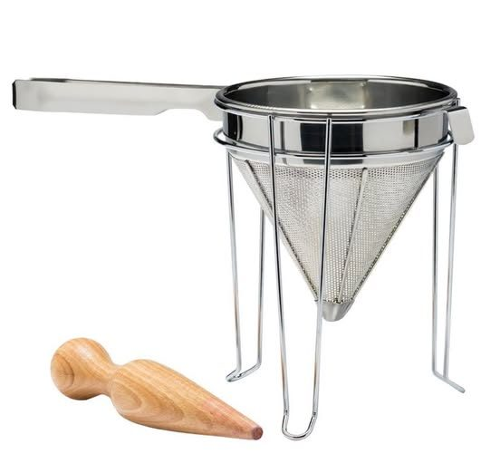
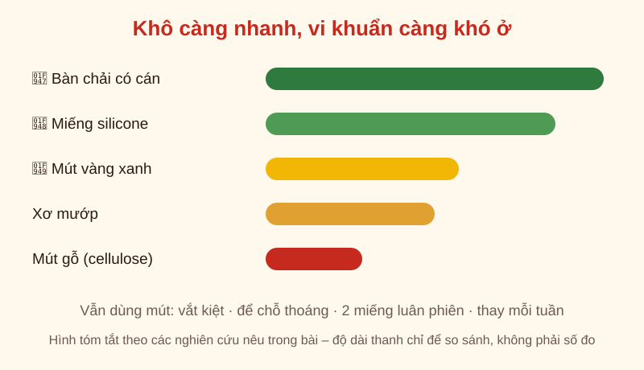
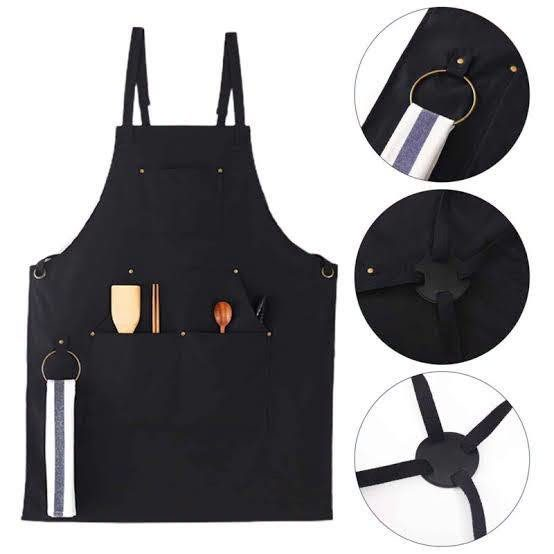
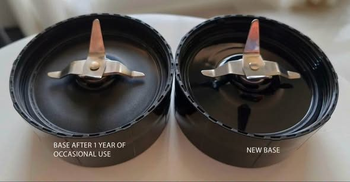
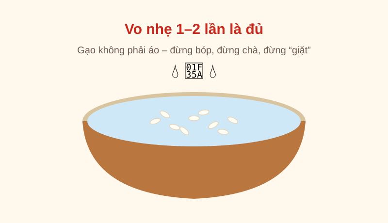

Trang chủ › Kiến thức bếp
Kiến thức bếp của Cô Kỹ
Những điều em đọc, em hỏi, em thử rồi kể lại bằng giọng bếp nhà: dụng cụ, an toàn thực phẩm, nguyên liệu – và sắp tới là rượu, bia, nước mắm, gia vị.
🔪 Dụng cụ bếp
Dao, chảo, nồi, tạp dề… dùng đúng thì bền, mua đúng thì đỡ tiền.
 Hàng lỗ trên lưỡi dao: không phải để “giảm ma sát” như người bán hay nóiLát khoai dính dao là do lực hút của màng nước chứ không phải ma sát. Rãnh giúp một chút, cách cắt và độ sắc giúp nhiều hơn.
Hàng lỗ trên lưỡi dao: không phải để “giảm ma sát” như người bán hay nóiLát khoai dính dao là do lực hút của màng nước chứ không phải ma sát. Rãnh giúp một chút, cách cắt và độ sắc giúp nhiều hơn.
Phễu lọc chóp nón – “cái nón” mà bếp nhà hàng nào cũng có nhưng ít ai dùng hết côngKhông chỉ để lọc nước dùng: có giá ba chân và chày gỗ nhọn, nó còn nghiền rau củ thành súp mịn như nhung.
Miếng rửa chén: thứ bẩn nhất bếp, và vì sao bàn chải có cán lại thắngMột khối mút bằng viên xúc xắc có thể chứa hàng chục tỷ vi khuẩn. Dụng cụ tốt nhất là loại khô nhanh nhất giữa hai lần rửa.
Chiếc tạp dề: mảnh vải kể chuyện nghề của loài người suốt mấy nghìn nămTừ chữ “napron” bị đọc nhầm, tạp dề của thợ rèn, thợ đá, đầu bếp Pháp, thương nhân Nhật – đến chiếc tạp dề vải bạt của người làm nghề thủ công hôm nay. Chảo “lồi giữa”, dầu chạy hết ra viền: chảo hỏng hay nhà sản xuất cố ý?Có chảo cong vì sốc nhiệt, có chảo được làm lõm sẵn cho bếp từ. Ba cách thử ngay ở nhà để khỏi vứt oan cái chảo.
Chảo “lồi giữa”, dầu chạy hết ra viền: chảo hỏng hay nhà sản xuất cố ý?Có chảo cong vì sốc nhiệt, có chảo được làm lõm sẵn cho bếp từ. Ba cách thử ngay ở nhà để khỏi vứt oan cái chảo.🛡️ An toàn thực phẩm
Những điều nhà mình nên biết để ăn ngon mà vẫn yên tâm.

Máy xay cối nhựa, hạt vi nhựa và chuyện chọn hộp đựng đồ ănNhựa bị bào mòn khi xay là có thật. Nhiệt, ma sát và độ cũ quan trọng hơn tên loại nhựa. Đồ nóng, đồ chua, đồ xay thì ưu tiên thủy tinh, inox, sứ. Đĩa gỏi cá sống và con sán dài chưa tới 1 cm: chanh, ớt, rượu đều không giết đượcSán lá gan nhỏ trong cá nước ngọt được Tổ chức Nghiên cứu Ung thư Quốc tế xếp nhóm 1 – cùng nhóm thuốc lá. Cách duy nhất chắc ăn là nấu chín.
Đĩa gỏi cá sống và con sán dài chưa tới 1 cm: chanh, ớt, rượu đều không giết đượcSán lá gan nhỏ trong cá nước ngọt được Tổ chức Nghiên cứu Ung thư Quốc tế xếp nhóm 1 – cùng nhóm thuốc lá. Cách duy nhất chắc ăn là nấu chín.🥬 Nguyên liệu & món
Vì sao các cụ nấu thế – nhìn bằng con mắt bếp nhà.

Vo gạo hay “giặt gạo”? Vo nhẹ 1–2 lần là đủ, kẻo trôi mất vitamin B1Chuyện bệnh tê phù của nhà giàu Nhật thời Edo, giải Nobel 1929 và lý do các cụ chỉ dặn khuấy nước một hai lần cho trôi bụi. Ốc bươu nhồi thịt: vì sao phải băm, phải có giò sống và phải hấp thật chínBăm để hết dai, giò sống để nhân không rã, nấm hương để ngọt gấp đôi – và hấp chín kỹ vì con ốc nước ngọt không đùa được đâu.
Ốc bươu nhồi thịt: vì sao phải băm, phải có giò sống và phải hấp thật chínBăm để hết dai, giò sống để nhân không rã, nấm hương để ngọt gấp đôi – và hấp chín kỹ vì con ốc nước ngọt không đùa được đâu.🍶 Rượu – bia
Sắp có: rượu ngâm, rượu nấu, bia – uống sao cho phải phép.
Em đang tìm hiểu, sắp có bài các bác nhé.
🐟 Nước mắm
Sắp có: độ đạm, mắm truyền thống – mắm công nghiệp, cách chọn.
Em đang tìm hiểu, sắp có bài các bác nhé.
🌶️ Gia vị
Sắp có: tiêu, hồi, quế, thảo quả… mua ở đâu, cất thế nào.
Em đang tìm hiểu, sắp có bài các bác nhé.